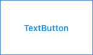

OEM Widgets
Material
La bibliothèque flutter/material est fournie nativement avec le SDK Flutter. Material Design est la charte graphique utilisée sous android et plus généralement sur tous les produits de la marque Google.
MaterialApp
Ce widget initialise tout ce qui est nécessaire pour faire une application material. Il gère notamment la taille de l’écran, la navigation, le thème…
MaterialApp(
title: 'Flutter Demo',
home: ...,
theme: ...,
)
Scaffold
Ce widget implémente la structure material.
Scaffold(
appBar: ...,
drawer: ...
body: ...,
floatingActionButton: ...
)
Buttons
Plusieurs widgets de type bouton sont disponibles.
- ElevatedButton Précédemment RaisedButton.
class MyWidget extends StatelessWidget {
@override
Widget build(BuildContext context) {
return ElevatedButton(
onPressed: () {}, child: const Text("ElevatedButton"));
}
}

- TextButton Précédemment FlatButton.
class MyWidget extends StatelessWidget {
@override
Widget build(BuildContext context) {
return TextButton(onPressed: () {}, child: const Text("TextButton"));
}
}

- ButtonBar Un conteneur horizontal pour afficher une liste de boutons.
class MyWidget extends StatelessWidget {
@override
Widget build(BuildContext context) {
return ButtonBar(
children: [
ElevatedButton(onPressed: () {}, child: const Text("ElevatedButton")),
TextButton(onPressed: () {}, child: const Text("TextButton"))
],
);
}
}

- IconButton Rendre des icônes cliquables.
class MyWidget extends StatelessWidget {
@override
Widget build(BuildContext context) {
return IconButton(onPressed: () {}, icon: const Icon(Icons.person));
}
}

Inputs
TextField
Afficher un champ de saisie material.
En général, un TextField est utilisé dans un Stateful Widget car il faut souvent associer un état au formulaire. Ce widget a une multitude de paramètres possibles, dont le controller qui permet d’interagir avec le champ de formulaire. On peut notamment remplir programmatiquement la valeur ou bien récupérer la valeur qu’à saisi l’utilisateur.
Attention à ne pas oublier de désactiver le contrôleur à la destruction de l’état du widget grâce à la méthode dispose.
class MyWidget extends StatefulWidget {
const MyWidget({Key? key}) : super(key: key);
@override
State<MyWidget> createState() => _MyWidgetState();
}
class _MyWidgetState extends State<MyWidget> {
late TextEditingController _controller;
@override
void initState() {
super.initState();
_controller = TextEditingController(text: 'John');
}
@override
void dispose() {
_controller.dispose();
super.dispose();
}
@override
Widget build(BuildContext context) {
return TextField(
controller: _controller,
decoration: const InputDecoration(
label: Text('Name'),
),
);
}
}